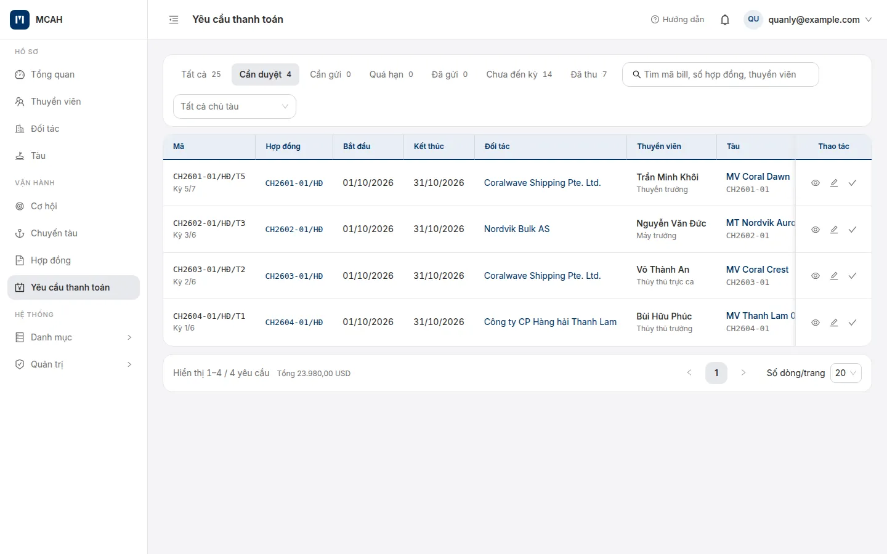
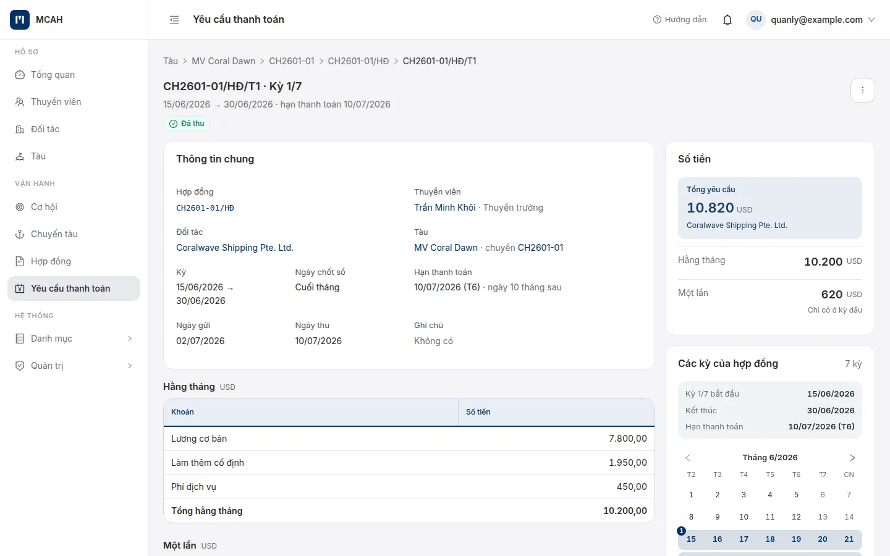

Hợp đồng và tiền
Yêu cầu thanh toán
Bill thu tiền chủ tàu theo kỳ: sửa, duyệt, gửi, ghi nhận đã thu.
Mỗi yêu cầu thanh toán (bill) là một kỳ thu tiền chủ tàu của một hợp đồng, cắt theo ngày chốt sổ. Kỳ đầu bắt đầu đúng ngày bắt đầu hợp đồng và cộng thêm các khoản một lần; kỳ cuối kết thúc đúng ngày kết thúc. Mã nối từ mã hợp đồng: CH2601-01/HĐ/T1 là kỳ 1 bên thu.
Chưa duyệt→Đã duyệt→Đã gửi→Đã thu

- Kỳ sinh ra ở trạng thái chưa duyệt; tới ngày chốt sổ thì vào tab Cần duyệt.
- Sửa số tiền từng khoản, ghi chú hoặc hạn thanh toán nếu cần (chỉ khi chưa duyệt). Muốn trừ những ngày chưa làm thì giảm thẳng số của khoản đó, ví dụ Lương cơ bản.
- Duyệt: người duyệt phải khác người sửa gần nhất. Kỳ đã duyệt bị khoá; muốn sửa thì Bỏ duyệt.
- Gửi cho chủ tàu ngoài hệ thống rồi đánh dấu Đã gửi. Thu hồi một kỳ đã gửi đưa nó về chưa duyệt.
- Nhận tiền thì Ghi nhận đã thu với ngày thu; ghi nhầm thì huỷ ghi nhận.

ViệcQuyền cần cóThường do
Sửa số tiền, ghi chúYêu cầu thanh toán · Sửa số tiền và ghi chúKế toán
Duyệt, bỏ duyệtYêu cầu thanh toán · Duyệt và bỏ duyệtKế toánDuyệt & quản lý
Đánh dấu đã gửi, thu hồiYêu cầu thanh toán · Đánh dấu đã gửi và thu hồiKế toán
Ghi nhận đã thuYêu cầu thanh toán · Ghi nhận đã thu và huỷ ghi nhậnKế toán